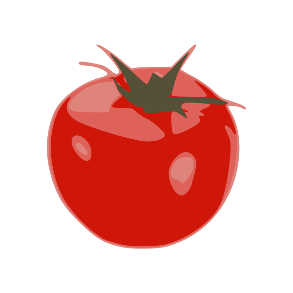

Pomodoro Timer
Session Length (minutes):
Short Break Length (minutes):
Long Break Length (minutes):
Sessions Until Long Break:
20:00
Debug Mode (5-second intervals):
Minutes until long break:
0
Sessions completed:
0
Start
Pause
Reset
Session